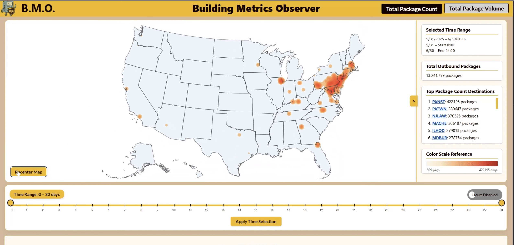
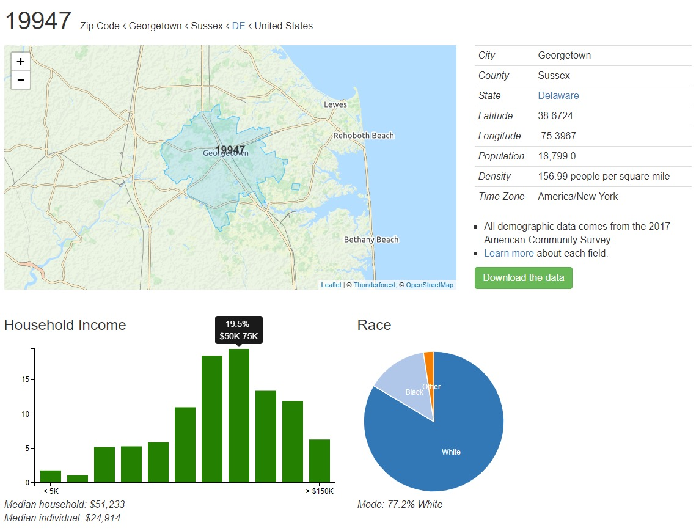
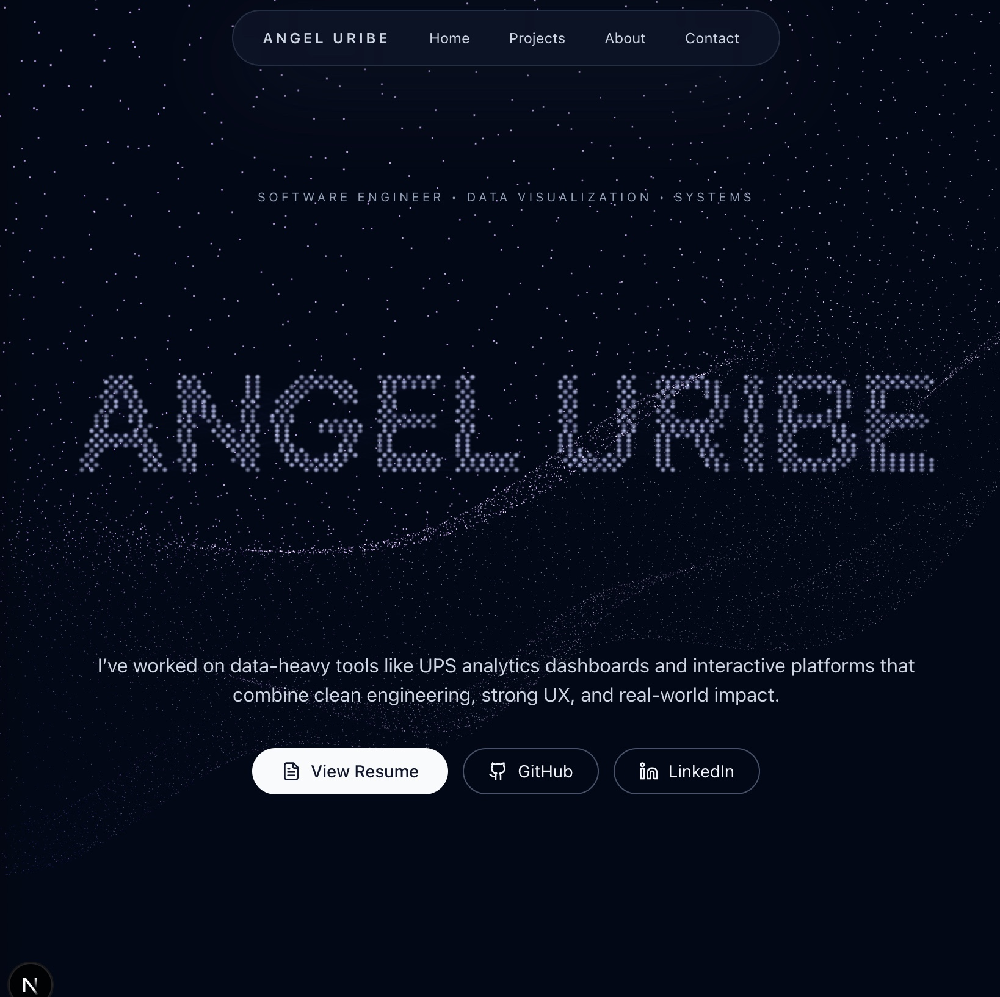

Building Output Analyzer
React • D3

- Built a dashboard that visualizes facility output volume over time using interactive charts.
- Added filtering by time range and location to reduce noise and make trends easier to spot.
- Focused on clean UI: readable labels, responsive layouts, and fast interactions.
ZIP to State Visualizer
React • D3

- Created an interactive map that highlights the state for a given ZIP code input.
- Rendered GeoJSON with D3 projections and used hover states for quick exploration.
- Designed the page to feel simple and “tool-like” instead of cluttered.
Portfolio Website
HTML • CSS

- Built a personal portfolio to showcase projects, experience, and contact information.
- Implemented responsive layout and consistent typography to improve readability.
- Optimized for quick navigation between sections and a clean first impression.